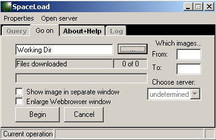

Использование SpaceLoad для получения больших количеств предварительных изображений (preview)
|  | Внимание! Синтаксис файлов-запросов системы EDC регулярно изменяется, пользуйтесь последней версией расширения create_query для создания файла запроса в Arcview. Внимание! SpaceLoad показывает загрузку процессора на 100% Реально это не соответствует действительности и с чем связано - непонятно. Если кто-то знает как исправить - напишите, будем рады исправить. |
Задача: Отобрать съемку на большую по площади территорию.
Preview (quicklook, footprint) - снимок с сильно уменьшенным разрешением, необходимый для предварительного визуального анализа и определения облачности, качества снимка и т.д для отбора снимка (снимков) для дальнейшей покупки полной версии.
Учитывая особенности работы съемочной аппаратуры некоторых спутников, количество снимков на некоторую территорию может достигать десятков или сотен. При отборе снимков на большую территорию через терминалы системы EDC (EROS Data Center) это может составить проблему, так как процесс просмотра, загрузки превью займет большое количество времени оператора. Программа SpaceLoad может помочь автоматизировать некоторые шаги по получению превью.
Если нужно еще и привязать превью, чтобы более точно произвести отбор, то после загрузки preview с помощью SpaceLoad можно практически мгновенно привязать их программой GT (см. Использование GT для пакетной привязки ДЗЗ).

Получение списка превью и настройка его вида
Для начала работы необходимо иметь в наличие результат поиска (listing), сохраненный в виде таблицы в формате HTML (о том так получить такую таблицу).
Для корректной работы программы рекомендуется производить поиск и сохранение результирующего списка через терминал ISA-MEIDA (EOSDIS-Israel).
Название таблицы должно быть строго таким - EOS Data Gateway Listing.htm, это название, которое предлагает Internet Explorer при попытке сохранить страницу с результатами поиска по умолчанию. Если вы используете другой браузер, он может предлагать другое имя файла, в этом случае вам необходимо скопировать и вставить нужное название - EOS Data Gateway Listing.htm.
После получения списка со сценами (Listing) нажмите на ссылку Customize this table, которая находится в начале страницы. Откроется окно, в котором можно настроить вид списка, можно добавить-убрать поля, отсортировать и установить лимит количества показываемых снимков на страницу.
Порядок полей в результирующей таблице должен быть
следующим:
Start Date
Area Coverage
При другом порядке полей, программа будет выдавать неправильные расчетные имена файлов.
Настройте выдачу результатов поиска таким образом, чтобы на одной странице выдавалось максимальное количество пунктов, иначе у вас будет не одна а тридцать одна страница с результатами. Поставьте сразу максимальное количество - 500.


Запуск SpaceLoad
Запустите программу SpaceLoad и настройте ваш Username&Password (Properties\Set login), если вы работали в зарегистрированном режиме. Если вы не регистрировались и работали в гостевом режиме, оставьте эти поля пустыми.
Все терминалы требуют отдельной регистрации, то есть вы не сможете зарегистрировавшись на EDC потом использовать этот же аккаунт на LARC. Программа может использовать и запоминать разные username\password для разных серверов.
Нажмите на кнопку с троеточием, которая находится на закладке Go on и укажите программе директорию, куда вы сохранили файл со списком. Закачанные превью будут грузиться в эту же директорию.
BEGIN - начать процесс поиска превью удовлетворяющих запросу на серверу.

Контроль процесса
Для работы программы необходимо чтобы вам аккаунт на серверах EDC был активирован, то есть находился в состоянии login, а не logout. Допустим, вы сохранили список в один день, а закачивать preview решили на следующий - ничего не получится, так как веб-интерфейс автоматически осуществляет операцию logout при отсутствии активности в течение 12 часов. В этом случае необходимо войти заново и пересохранить список.
Правильная работа программы должна сопровождаться такими записями в строке статуса:
Browse in progress...for 120699_050604.jpg
Browse Complete...
Downloading BROWSE product page...
BROWSE product page received
BROWSE product page converted
New filename calculated
Begin file downloading ...120699_050604.jpg
File received
Процесс получения изображения можно контролировать, включив режим Show image in separate window (Показывать скачанное изображение в отдельном окне).

Так же, можно проверять ход процесса, включая и выключая режим Enlarge Webbrowser window (Увеличить окно веб-броузера). Внимание, закрывать открытое окно веб-броузера необходимо снова нажав на переключатель Enlarge Webbrowser window (использовать обычный метод закрытия крестом не рекомендуется). Особенностью работы программы является использования специальной библиотеки, наследующей функции Internet Explorer, внутри SpaceLoad работает мини-веб-браузер, "прокручивающий" команды за оператора. К сожалению, такой подход иногда страдает от свойственных Internet Explorer'у недостатков.
При подвисании процесса скачивания, когда вы не получаете какого-либо эффекта в течение разумно долгого периода времени (максимальное время ожидания ответа составляет 45 минут) попытайтесь еще раз нажать на BEGIN.

SpaceLoad автоматически переименовывает файлы в удобную номенклатуру, при этом каждая preview снимка получает уникальное название отличающее ее от других. Она составляется из значений даты и времени времени съемки взятых со страницы описания этого снимка в таком формате:
ddmmyy_hhmmss
то есть день-месяц-год_часы-минуты-секунды.
Если вы хотите в дальнейшем привязать закачанные материалы, сохраните страницу листинга в текстовом виде с помощью ссылки text only version, которая находится в самом начале таблицы справа. Текстовую версию таблицы лучше сохранить в ту же папку, что и рабочая с расширением lnd. По умолчанию IE присвоит расширение txt, этого можно избежать, если написать имя файла и расширение в кавычках, например так "test.lnd". Внимательно проверьте порядок полей в результирующей таблице (см. выше), он должен соответствовать указанному.
Ссылки по теме
Дата создания: 09.12.2003
Автор(ы): Максим Дубинин